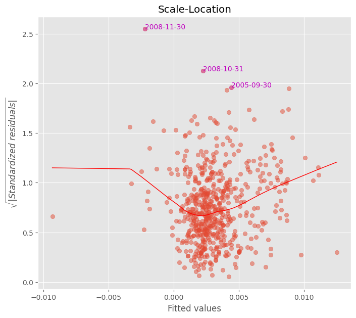

Linear Regression Diagonostics#
UNDER CONSTRUCTION
Linear regression diagnostics, HAC robust standard errors
Residual analysis: outliers, leverage, influential points
Multicollinearity, variance inflation factor
import numpy as np
import pandas as pd
import pandas as pd
from pandas import DataFrame, Series
import matplotlib.pyplot as plt
import time
import os
import seaborn as sns
import patsy
import statsmodels.formula.api as smf
from statsmodels.stats.outliers_influence import variance_inflation_factor
from finds.readers import Alfred
from finds.plots import plot_fitted, plot_leverage, plot_scale, plot_qq
from finds.misc import Show
from secret import credentials, paths
show = Show(ndigits=4, latex=None)
VERBOSE = 0
# matplotlib qt
imgdir = paths['images'] / 'ts'
alf = Alfred(api_key=credentials['fred']['api_key'],
savefile=paths['scratch'] / 'alfred.pkl')
# difference of logs of CPI and PPI monthly series from FRED
series_id, freq, start = 'CPIAUCSL', 'M', 0 #19740101
exog_id = 'WPSFD4131'
#exog_id = 'INDPRO'
data = pd.concat([alf(s, start=start) for s in [series_id, exog_id]], axis=1)
data.index = pd.DatetimeIndex(data.index.astype(str))
data = np.log(data).diff().dropna() # model changes in logs of the series
Linear regression#
## Run Linear Regression (with one lag)
dmf = (f'{series_id} ~ {series_id}.shift(1) ')
model = smf.ols(formula=dmf, data=data).fit()
print(model.summary())
OLS Regression Results
==============================================================================
Dep. Variable: CPIAUCSL R-squared: 0.435
Model: OLS Adj. R-squared: 0.434
Method: Least Squares F-statistic: 454.7
Date: Wed, 30 Aug 2023 Prob (F-statistic): 2.93e-75
Time: 10:00:03 Log-Likelihood: 2720.3
No. Observations: 593 AIC: -5437.
Df Residuals: 591 BIC: -5428.
Df Model: 1
Covariance Type: nonrobust
=====================================================================================
coef std err t P>|t| [0.025 0.975]
-------------------------------------------------------------------------------------
Intercept 0.0011 0.000 7.609 0.000 0.001 0.001
CPIAUCSL.shift(1) 0.6566 0.031 21.323 0.000 0.596 0.717
==============================================================================
Omnibus: 62.951 Durbin-Watson: 2.031
Prob(Omnibus): 0.000 Jarque-Bera (JB): 210.870
Skew: -0.459 Prob(JB): 1.62e-46
Kurtosis: 5.774 Cond. No. 304.
==============================================================================
Notes:
[1] Standard Errors assume that the covariance matrix of the errors is correctly specified.
## Run Linear Regression (with 2 lags)
dmf = (f'{series_id} ~ {series_id}.shift(1) + {series_id}.shift(2)')
model = smf.ols(formula=dmf, data=data).fit()
print(model.summary())
OLS Regression Results
==============================================================================
Dep. Variable: CPIAUCSL R-squared: 0.431
Model: OLS Adj. R-squared: 0.429
Method: Least Squares F-statistic: 223.2
Date: Wed, 30 Aug 2023 Prob (F-statistic): 6.98e-73
Time: 10:00:03 Log-Likelihood: 2715.9
No. Observations: 592 AIC: -5426.
Df Residuals: 589 BIC: -5413.
Df Model: 2
Covariance Type: nonrobust
=====================================================================================
coef std err t P>|t| [0.025 0.975]
-------------------------------------------------------------------------------------
Intercept 0.0011 0.000 7.134 0.000 0.001 0.001
CPIAUCSL.shift(1) 0.6401 0.041 15.550 0.000 0.559 0.721
CPIAUCSL.shift(2) 0.0206 0.041 0.503 0.615 -0.060 0.101
==============================================================================
Omnibus: 64.147 Durbin-Watson: 2.005
Prob(Omnibus): 0.000 Jarque-Bera (JB): 220.795
Skew: -0.461 Prob(JB): 1.13e-48
Kurtosis: 5.846 Cond. No. 521.
==============================================================================
Notes:
[1] Standard Errors assume that the covariance matrix of the errors is correctly specified.
## Run Linear Regression (with exog and lag)
dmf = (f'{series_id} ~ {series_id}.shift(1) + {exog_id}.shift(1)')
model = smf.ols(formula=dmf, data=data).fit()
print(model.summary())
OLS Regression Results
==============================================================================
Dep. Variable: CPIAUCSL R-squared: 0.462
Model: OLS Adj. R-squared: 0.460
Method: Least Squares F-statistic: 253.1
Date: Wed, 30 Aug 2023 Prob (F-statistic): 4.20e-80
Time: 10:00:03 Log-Likelihood: 2734.8
No. Observations: 593 AIC: -5464.
Df Residuals: 590 BIC: -5451.
Df Model: 2
Covariance Type: nonrobust
======================================================================================
coef std err t P>|t| [0.025 0.975]
--------------------------------------------------------------------------------------
Intercept 0.0009 0.000 5.960 0.000 0.001 0.001
CPIAUCSL.shift(1) 0.5632 0.035 16.262 0.000 0.495 0.631
WPSFD4131.shift(1) 0.1893 0.035 5.440 0.000 0.121 0.258
==============================================================================
Omnibus: 114.640 Durbin-Watson: 2.024
Prob(Omnibus): 0.000 Jarque-Bera (JB): 562.787
Skew: -0.763 Prob(JB): 6.20e-123
Kurtosis: 7.522 Cond. No. 429.
==============================================================================
Notes:
[1] Standard Errors assume that the covariance matrix of the errors is correctly specified.
# Heteroskedasity and HAC robust errors
robust = model.get_robustcov_results(cov_type='HAC', use_t=None, maxlags=0)
print(robust.summary())
OLS Regression Results
==============================================================================
Dep. Variable: CPIAUCSL R-squared: 0.462
Model: OLS Adj. R-squared: 0.460
Method: Least Squares F-statistic: 173.6
Date: Wed, 30 Aug 2023 Prob (F-statistic): 4.98e-60
Time: 10:00:03 Log-Likelihood: 2734.8
No. Observations: 593 AIC: -5464.
Df Residuals: 590 BIC: -5451.
Df Model: 2
Covariance Type: HAC
======================================================================================
coef std err t P>|t| [0.025 0.975]
--------------------------------------------------------------------------------------
Intercept 0.0009 0.000 5.474 0.000 0.001 0.001
CPIAUCSL.shift(1) 0.5632 0.065 8.609 0.000 0.435 0.692
WPSFD4131.shift(1) 0.1893 0.055 3.443 0.001 0.081 0.297
==============================================================================
Omnibus: 114.640 Durbin-Watson: 2.024
Prob(Omnibus): 0.000 Jarque-Bera (JB): 562.787
Skew: -0.763 Prob(JB): 6.20e-123
Kurtosis: 7.522 Cond. No. 429.
==============================================================================
Notes:
[1] Standard Errors are heteroscedasticity and autocorrelation robust (HAC) using 0 lags and without small sample correction
Y, X = patsy.dmatrices(dmf + ' - 1', data=data) # exclude intercept term
show(Series({X.design_info.column_names[i]: variance_inflation_factor(X, i)
for i in range(X.shape[1])}, name='VIF').to_frame(),
caption="Variance Inflation Factors")
| VIF | |
|---|---|
| Variance Inflation Factors | |
| CPIAUCSL.shift(1) | 2.0559 |
| WPSFD4131.shift(1) | 2.0559 |
Residual plots#
## Plot residuals and identify outliers
fig, ax = plt.subplots(clear=True, figsize=(8,7))
z = plot_fitted(fitted=model.fittedvalues,
resid=model.resid,
ax=ax)
plt.savefig(imgdir / 'outliers.jpg')
show(z.to_frame().T, caption="Residual Outliers")
#plt.show()
| date | 2005-09-30 | 2008-10-31 | 2008-11-30 |
|---|---|---|---|
| Residual Outliers | |||
| outliers | 0.0092 | -0.0109 | -0.0156 |
## QQ Plot of residuals and identify outliers
fig, ax = plt.subplots(clear=True, figsize=(8,7))
z = plot_qq(model.resid, ax=ax)
plt.savefig(imgdir / 'qq.jpg')
#plt.show()
z
/home/terence/env3.11/lib/python3.11/site-packages/statsmodels/graphics/gofplots.py:1045: UserWarning: color is redundantly defined by the 'color' keyword argument and the fmt string "b" (-> color=(0.0, 0.0, 1.0, 1)). The keyword argument will take precedence.
ax.plot(x, y, fmt, **plot_style)
| residuals | standardized | |
|---|---|---|
| date | ||
| 2008-11-30 | -0.015636 | -6.505301 |
| 2008-10-31 | -0.010866 | -4.521038 |
| 2022-07-31 | -0.009155 | -3.809182 |
| 2006-09-30 | -0.008979 | -3.735893 |
| 2005-10-31 | -0.007286 | -3.031274 |
| 2008-08-31 | -0.007255 | -3.018455 |
| 1980-07-31 | -0.007105 | -2.955960 |
| 2013-03-31 | -0.007025 | -2.922866 |
| 2005-09-30 | 0.009246 | 3.846821 |
## Plot scale of residuals with outliers
fig, ax = plt.subplots(clear=True, figsize=(8,7))
plot_scale(model.fittedvalues, model.resid, ax=ax)
plt.savefig(imgdir / 'scale.jpg')

## Plot leverage and identify influential points
fig, ax = plt.subplots(clear=True, figsize=(8,7))
z = plot_leverage(model.resid, model.get_influence().hat_matrix_diag,
model.get_influence().cooks_distance[0],
ddof=len(model.params), ax=ax)
plt.savefig(imgdir / 'leverage.jpg')
z
| influential | cook's D | leverage | |
|---|---|---|---|
| date |